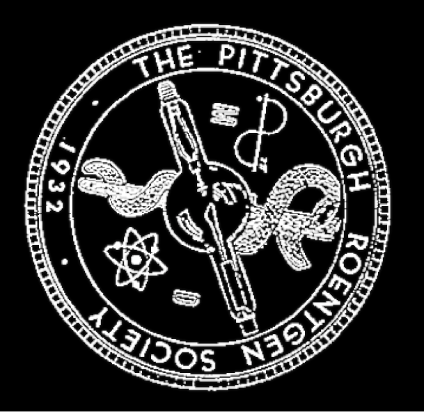

Be sure to check with your department administrator BEFORE paying online. Some departments and groups have traditionally paid for their radiologist's PRS membership fees. Contact us if you would like to set up a single or recurring payment for a defined number of radiologists.
Join via Google Forms
Pay membership dues via PayPal
You will be redirected to Paypal, select the appropriate option from the dropdown menu.
- Physicians: $175/year
- Advanced Practice Providers (PA/NP): $75/year
- Trainees: $0
Please consider donating to the Hornick Fund.